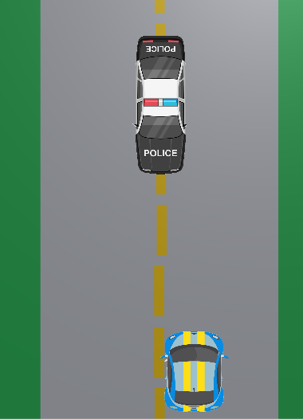
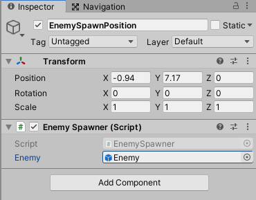

Racing Game
1. Projektin aloittaminen
Tehdään yksinkertainen autopeli jossa ajetaan autolla

- Lisää projektille kansiot Scripts ja Sprites
- Etsi sopiva kuva autosta ylhäältä päin kuvattuna. Voit hakea Googlen kuvahaussa Leikekuvia jotta kuvissa läpinäkyvä tausta.
- Lisää auto projektiisi. Voit säätää auton asentoa Rotation z-attribuutin avulla
Piirrä tiestä sopiva kuva piirrosohjelmassa (esim. Paint).
- Tuo tie mukaan projektiin
- Älä raahaa tietä skenelle vaan määritä Inspectorissa sen Texture Type: Default ja Wrap Mode: Repeat.
Quad
- Lisää Skenelle (GameObject / 3D Object / Quad)
- Nimeä se esim. Track
- Muuta Scale-attribuuteilla tie sopivan kokoiseksi
- Raahaa tie tämän Quadin päälle
- Voit lisätä Directional Light -objektin ja säätää sen Intensity-attribuutin avulla valoisuutta haluamaksesi (GameObject / Light / Directional Light).
2. Tien liikuttaminen
- Lisää uusi Skripti (TrackController), lisää se Track-objektille
Lisää skriptille uusi julkinen muuttuja:
public float speed; Vector2 offset;
- Update-metodissa määritetään paljonko ollaan liikuttamassa tietä eteenpäin:
void Update() { // pystysuunnassa y asteikko siirtyy nopeuden suhteessa offset = new Vector2(0, Time.time * speed); GetComponent<Renderer>().material.mainTextureOffset = offset; }Lisää komponentti TrackController (Add Component) Track-objektille
- Testaa tässä vaiheessa liikkuuko tausta, aseta speed-muuttujan arvo sopivaksi.
3. Auto
- Lisää uusi skripti (CarController), lisää se autolle.
- Auto tarvitsee aluksi nopeuden ja sijainnin liikkumista varten
public float speed; Vector3 position;
- Kun ohjelma käynnistyy niin otetaan talteen tieto missä auto sijaitsee:
void Start() { position = transform.position; } -
Päivitettäessä muutetaan auton sijaintia Horizontal-inputin mukaan:
void Update() { // Time.delta jotta tapahtuisi aina samalla nopeudella position.x += Input.GetAxis("Horizontal") * speed * Time.deltaTime; transform.position = position; }
4. Liikkuminen reunojen yli
Nyt auto voi mennä yli ajoradan. Lisää ehtolause jolla tarkistat ettei auto voi mennä tien ulkopuolelle.
5. Vastustajat
- Etsi sopiva auto joka toimisi vastustajana. Lisää auto Sprites-kansioon ja raahaa se sieltä Skenelle.
- Lisää vastustajalle uusi skripti, esimerkiksi EnemyController
-
Lisää aluksi skriptille nopeus, voit säätää tämän myöhemmin sopivaksi:
public float speed = 0.5f;
-
Lisää Update-metodissa liikuttaminen alaspäin:
void Update() { // asetetaan vastustajalle suunta: suoraan alaspäin transform.Translate(new Vector3(1, 0, 0) * speed * Time.deltaTime); }
6. Spawn
- Lisää uusi tyhjä Game Object, nimeä se esimerkiksi EnemySpawnPosition. Tarkoitus on käyttää tätä uusien vastustajien lisäämiseen.
- Siirrä objekti pelin näytön yläpuolelle
- Lisää uusi skripti, EnemySpawner
- Raahaa skripti EnemySpawnPosition-objektille.
- Lisää skriptille julkinen muuttuja:
public GameObject enemy;
- Tee vastustajasta prefab (kannattaa tehdä oma kansio Prefabs ja raahata vastustaja sinne.). Voit nyt poistaa vastustajan Skeneltä ja raahata skriptin muuttujalle prefabin.

- Lisätään aloituskoodi jolla voidaan testata tuleeko auto näkyviin (jos ei tule niin tarkista Rotation-attribuutti).
void Start() { // luodaan uusi vastustaja ja asetetaan sille halutti sijainti Vector3 carPos = new Vector3(0, transform.position.y, 0); Instantiate(enemy, carPos, transform.rotation); } - Testaa toimintaa. Mieti miten saisit arvottaua sijainnin x-akselilla satunnaiseksi.
// arvotaan luku -3 .. 3 float x = Random.Range(-3.0f, 3.0f);
- Lisätään ajastin luomaan autoja, lisää enemySpawner-luokalle muuttujat:
public float timer; public float delayTimer;
-
Lisää Start()-metodissa ajastimen alustus:
void Start() { timer = delayTimer; }Update()-metodissa päivitetään ajastinta ja tarkistetaan pitääkö auto luoda:void Update() { timer -= Time.deltaTime; if (timer < 0) { // luo täällä uusi auto ja aseta ajastin taas alkuasentoon: Vector3 carPos = new Vector3(0, transform.position.y, 0); Instantiate(enemy, carPos, transform.rotation); timer = delayTimer; } }
7. Törmääminen
- Lisää autolle RigidBody2D ja BoxCollider2D, säädä "laatikko" sopivan kokoiseksi (Edit Collider)
- Lisää myös vastustajalle RigidBody2D ja BoxCollider2D.
- Lisää tag vastustajalle (esimerkiksi "enemy").
- Lisää pelaajalle metodi jossa tarkistat törmättiinkö vastustajaan.
void OnCollisionEnter2D(Collision2D col) { if (col.gameObject.tag == "enemy") { // täällä törmätään // lisää pelaajan tuhoaminen } }Jos pelaaja osuu vastustajaan niin lisää tuhoa pelaaja.Debug.Log("törmäys vastustajaan"); // tuhotaan pelaaja Destroy(gameObject);
8. Vastustajien tuhoaminen
- Kun vastustaja liikkuu y-akselilla näytön ulkopuolelle niin se kannattaa tuhota. Ylimääräiset objektit voivat pikku hiljaa hidastaa ohjelmaasi (ja kuluttavat muistia yms.). Tällä kertaa tehdään piiloon GameObject joka hoitaa tuhoamisen. Lisää uusi tyhjä GameObject, nimeä esimerkiksi "destroyer". Siirrä tämä tuhoaja pelialueen alapuolelle, juuri näytön ulkopuolelle.
- Lisää tuhoajalle BoxCollider2D, muuta sen koko niin leveäksi että se peittää tien.
- Lisää tuhoajalle tag, esimerkiksi "destroyer".
- Lisää nyt vastustajalle OnCollisionEnter2D samaan tapaan kuin pelaajalla, nyt jos vastustaja osuu tuhoajaan niin tuhoa auto. Kokeile ohjelman toimintaa, nyt vastustajien pitäisi hävitä Sceneltä kun ne osuvat tuhoajaan.
void OnCollisionEnter2D(Collision2D col) { if (col.gameObject.tag == "destroyer") { Debug.Log("törmäys tuhoajaan"); Destroy(gameObject); } }
9. Lisäautot
- Lisää 2-3 uutta vastaustaja-autoa projektiisi. Tämä kannattaa tehdä ensin kopioimalla alkuperäinen vihollinen jotta uudella autolla on valmiiksi skripti yms. ominaisuudet. Muuta uuden auton sprite haluamaksesi.
- Tee uusista autoista Prefab-kansioosi uusia prfabeja. Lisää näille uusille autoille sama EnemyController-skripti.
- EnemySpawner-skriptissä muutetaan GameObject jossa on yksi auto taulukoksi jossa voi olla monta autoa:
// muuta GameObject jossa vastustaja: public GameObject[] enemies;
Nyt meidän pitää arpoa satunnainen vastustaja, tämä riippuu siitä montako erilaista vastustajaa sinulla on. Random.Range:n arvot tulee olla 0 - autojen määrä.void Update() { timer -= Time.deltaTime; if (timer < 0) { float posX = Random.Range(leftRange, rightRange); int carIndex = Random.Range(0,5); Vector3 carPos = new Vector3(posX, transform.position.y, 0); Instantiate(enemies[carIndex], carPos, transform.rotation); timer = delayTimer; } } - Taulukon käyttäminen editorissa. Kun koodi toimii voidaan palata editoriin asettamaan prefabit paikalleen taulukkoon. Muuta enemies-taulukon koko oikeaksi ja raahaa Prefabs-kansiostasi vastustajat paikalleen. Testaa toimintaa.
9. Pause
- Tarkoitus on pysäyttää peli kun painetaan esimerkiksi välilyöntiä tai p-kirjainta. Pysäytettäessä pelin aika pysähtyy ja ilmestyy teksti "PAUSE", kun painiketta painetaan uudestaan peli käynnistyy ja teksti häviää.
- Lisää kaksi muuttujaa pelaajalle:
public Text txtPaused; private bool paused;
- Lisää skenelle Text ja aseta se oikealle kohdalla. Raahaa Text muuttujan arvoksi skriptissä.
- Lisätään lopuksis koodi joka pysäyttää pelin:
if (Input.GetKeyDown("space")) { if (paused) { // pelin pitäisi jatkua } else { paused = true; txtPaused.text = "PAUSE"; Time.timeScale = 0; } }
10. Game Over
- Kun pelaaja osuu vastustajaan pelin pitäisi päättyä. Lisää uusi skene ja lisää sinne Game over-teksti. Lisäksi tarvitaan painike jolla pelin voi aloittaa uudestaan.
11. Pisteet (*)
- Pelissä olisi enemmän järkeä jos se edistyisi ja muuttuisi vaikeammaksi. Helpointa olisi, jos pelaaja saisi pisteitä jokaisesta vastustajasta joka on tuhottu (ohitettu). Samalla pelin tulisi muuttua vaikeammaksi.
- Vastustajien nopeuden kasvattaminen
- Vastustajien luontinopeuden kasvattaminen.
- Taustan liikkumisen nopeus
- Vaikeuden lisääminen
TrackController-skriptin kutsuminen muualta: - esimerkiksi kun pisteet kasvavat niin halutaan vauhdin kasvavan
TrackController track = GameObject.Find("Track").GetComponent<TrackController>();
track.AddSpeed();
TrackController.cs tarvitsee julkisen aliohjelman joka kasvattaisi nopeutta
public void AddSpeed() {
speed++;
}